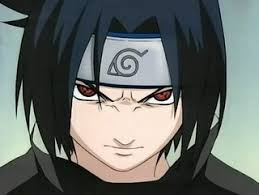

Sasuke Uchiha (うちはサスケ, Uchiha Sasuke) é um dos últimos membros sobreviventes do clã Uchiha de Konohagakure, além de ser a reencarnação atual de Indra. Ele se tornou um shinobi para que pudesse algum dia ficar forte o suficiente para se vingar contra o seu irmão mais velho, Itachi, que tinha massacrado todo o seu clã. Inicialmente, um membro do Time 7 de Konoha, Sasuke desertou da aldeia para obter poder com Orochimaru, e mais tarde também se juntou a Akatsuki, tornando-se um criminoso internacional no processo. Mais tarde, ele se torna uma peça fundamental para acabar com a Quarta Guerra Mundial Ninja, até ser finalmente redimido por seu rival, e também melhor amigo, Naruto Uzumaki. Sasuke decide voltar para Konoha, dedicando a sua vida para ajudar a proteger a vila e seus habitantes.